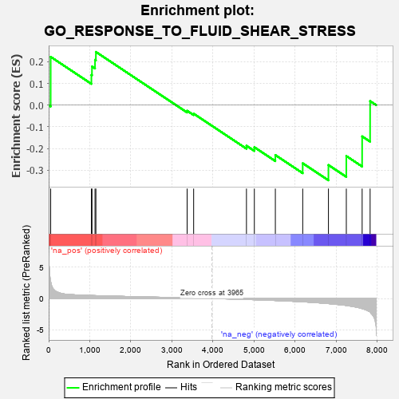
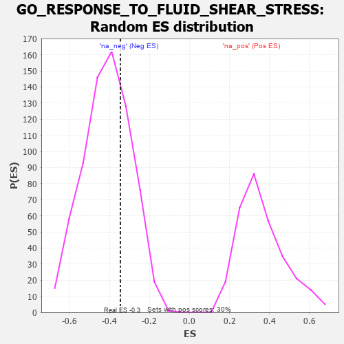

| | | Dataset | 7d |
| Phenotype | NoPhenotypeAvailable |
| Upregulated in class | na_neg |
| GeneSet | GO_RESPONSE_TO_FLUID_SHEAR_STRESS |
| Enrichment Score (ES) | -0.34617594 |
| Normalized Enrichment Score (NES) | -0.83585405 |
| Nominal p-value | 0.70487106 |
| FDR q-value | 0.98011386 |
| FWER p-Value | 1.0 |
Table: GSEA Results Summary

Fig 1: Enrichment plot: GO_RESPONSE_TO_FLUID_SHEAR_STRESS
Profile of the Running ES Score & Positions of GeneSet Members on the Rank Ordered List
| PROBE | GENE SYMBOL | GENE_TITLE | RANK IN GENE LIST | RANK METRIC SCORE | RUNNING ES | CORE ENRICHMENT | | 1 | TGFB3 | | | 49 | 2.654 | 0.2225 | No |
| 2 | AKT1 | | | 1040 | 0.476 | 0.1391 | No |
| 3 | MEF2C | | | 1054 | 0.473 | 0.1782 | No |
| 4 | SRC | | | 1128 | 0.459 | 0.2085 | No |
| 5 | MTSS1 | | | 1149 | 0.454 | 0.2451 | No |
| 6 | SMAD7 | | | 3369 | 0.093 | -0.0257 | No |
| 7 | HDAC3 | | | 3528 | 0.072 | -0.0393 | No |
| 8 | P2RX4 | | | 4813 | -0.161 | -0.1868 | No |
| 9 | KLF4 | | | 5005 | -0.198 | -0.1937 | No |
| 10 | TFPI2 | | | 5516 | -0.324 | -0.2298 | No |
| 11 | KLF2 | | | 6182 | -0.532 | -0.2676 | No |
| 12 | ADAM9 | | | 6808 | -0.819 | -0.2757 | Yes |
| 13 | ABCA1 | | | 7243 | -1.113 | -0.2343 | Yes |
| 14 | PKD1 | | | 7628 | -1.611 | -0.1438 | Yes |
| 15 | PKD2 | | | 7822 | -2.167 | 0.0187 | Yes |
Table: GSEA details [plain text format]

Fig 2: GO_RESPONSE_TO_FLUID_SHEAR_STRESS: Random ES distribution
Gene set null distribution of ES for GO_RESPONSE_TO_FLUID_SHEAR_STRESS